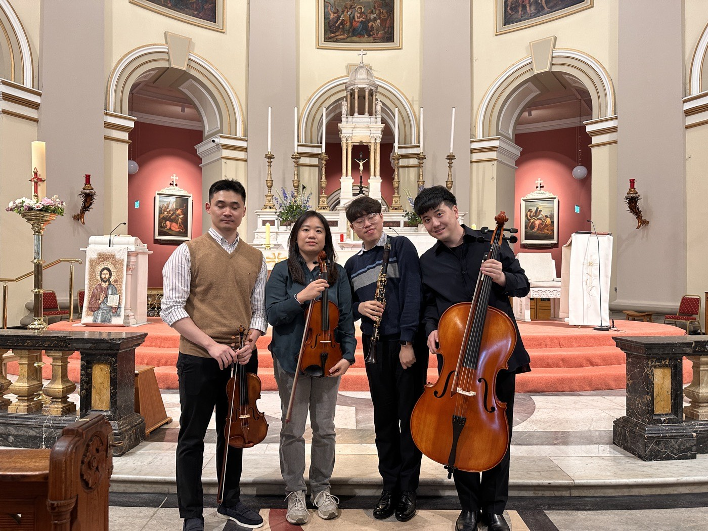

40+세션·공연
4연주한 국가
20+기관·공간
143강의 누적 참석
7 / 7파일럿 전원 수료
지금
진행 중인 일.
모집 중
리코더 앙상블 — Mulhuddart
완전 초보를 위한 12주. 경험도, 악보 읽는 능력도 필요하지 않습니다.
- 장소
- Mulhuddart Community Centre, Dublin 15
- 요일
- 수요일 저녁 7:00–8:00
- 개강
- 2026년 9월 9일
- 수강료
- 무료
다가오는 연주
An Autumn Concert · 가을 음악회
소프라노·해금·클라리넷·피아노 — 쇼팽, 피에르네, 슈포어, 슈베르트와 한국 가곡.
- 장소
- Methodist Centenary Church, Ranelagh, Dublin 6
- 일시
- 2026년 9월 19일 토요일 오후 5시
- 입장
- 무료 · 후원금은 감사히 받습니다
작동 방식
연주하기와 듣기가 서로를 먹여 살립니다.
찾아가서 연주합니다. 누군가 자기도 해 볼 수 있겠느냐고 묻습니다. 그 질문이 수업이 되고, 그 수업이 다음 방에서 연주할 사람을 만듭니다.

우리가 존재하는 이유
존엄을 되찾아 주는 것은 듣기가 아니라 연주하기입니다.
클래식 음악은 풍요롭지만 여전히 많은 사람에게 닿지 않습니다 — 나이, 거동, 소득, 지역, 그리고 그저 낯설다는 이유로. 요양시설도, 병원도, 쉼터도, 시골 본당도 관객이 없는 곳이 아닙니다. 가장 오래 기다려 온 관객이 이미 그곳에 있습니다.


“음악을 통해 그는 달리 고립감을 느낄 수 있는 이들에게 격려와 존엄, 그리고 영적 동행을 건넵니다.”
더블린 보좌주교 도날 로치 · 2026년 2월 16일기록으로 남은 것
우리 아닌 누군가가 비용을 댔습니다.
2026년 South Dublin County Council 예술과가 이 프로젝트를 South Dublin Live 2026에 선정했습니다. 처음으로 공적 자금이 들어온 일입니다. Rua Red, The Civic, Tallaght University Hospital의 지지 서한을 보유하고 있습니다.